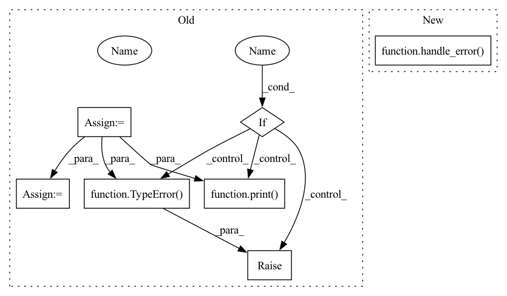

Pattern ID :2962

Before Change
def fail_return(name: str, ann: SubscriptableMeta, rep: str, halt: bool) -> None:
Print/raise typecheck fail error for return values.
failed = f"{Color.RED}FAILED{Color.END}"
type_err = f"{failed}: Return {name} has wrong type. Expected type: "
type_err += f""{ann}" Actual type: "{rep}""
if halt:
raise TypeError(type_err)
print(type_err)
def fail_uninitialized(name: str, ann: SubscriptableMeta, halt: bool) -> None:
Print/raise typecheck fail error for uninitialized placeholder.
After Change
Print/raise typecheck fail error for return values.
err = f"{FAIL}: Return {name} has wrong type. Expected type: "
err += f""{ann}" Actual type: "{rep}""
handle_error(err)
def fail_uninitialized(name: str) -> None:
Print/raise typecheck fail error for uninitialized placeholder.
In pattern: SUPERPATTERN
Frequency: 3
Non-data size: 7
Instances
Fragment ID: 11419962
Project Name: brendanxwhitaker/asta
Commit Name: d09cf7dcadee12c61fa426e2e0d47f5e3fd2a3fa
Time: 2020-03-19
Author: 35980963+langfield@users.noreply.github.com
File Name: asta/display.py
M Class Name: AnonimousClass
N Class Name: AnonimousClass
M Method Name: fail_return(3)
N Method Name: fail_return(4)
M Parent Class:
N Parent Class:
M File Name: asta/display.py
N File Name: asta/display.py
M Start Line: 66
M End Line: 73
N Start Line: 72
N End Line: 74
'>
Before Change
Print/raise typecheck fail error for uninitialized placeholder.
failed = f"{Color.RED}FAILED{Color.END}"
solution_err = f"No unique solution (found {len(solutions)})"
type_err = f"{failed}: {solution_err} for system "
type_err += f""{equations}" of symbols "{symbols}""
if halt:
raise TypeError(type_err)
print(type_err)
def get_header(decorated) -> str: // type: ignore[no-untyped-def]
Print the typecheck header.
After Change
solution_err = f"No unique solution (found {len(solutions)})"
err = f"{FAIL}: {solution_err} for system "
err += f""{equations}" of symbols "{symbols}""
handle_error(err)
def get_header(decorated) -> str: // type: ignore[no-untyped-def]
Print the typecheck header.
'>
Fragment ID: 11419961
Project Name: brendanxwhitaker/asta
Commit Name: d09cf7dcadee12c61fa426e2e0d47f5e3fd2a3fa
Time: 2020-03-19
Author: 35980963+langfield@users.noreply.github.com
File Name: asta/display.py
M Class Name: AnonimousClass
N Class Name: AnonimousClass
M Method Name: fail_system(3)
N Method Name: fail_system(4)
M Parent Class:
N Parent Class:
M File Name: asta/display.py
N File Name: asta/display.py
M Start Line: 89
M End Line: 98
N Start Line: 114
N End Line: 116
'>
Before Change
def fail_argument(name: str, ann: SubscriptableMeta, rep: str, halt: bool) -> None:
Print/raise typecheck fail error for arguments.
failed = f"{Color.RED}FAILED{Color.END}"
type_err = f"{failed}: Argument "{name}" "
type_err += f"has wrong type. Expected type: "{ann}" "
type_err += f"Actual type: "{rep}""
if halt:
raise TypeError(type_err)
print(type_err)
def fail_return(name: str, ann: SubscriptableMeta, rep: str, halt: bool) -> None:
Print/raise typecheck fail error for return values.
After Change
Print/raise typecheck fail error for arguments.
err = f"{FAIL}: Argument "{name}" has wrong type. Expected type: "{ann}" "
err += f"Actual type: "{rep}""
handle_error(err)
def fail_return(name: str, ann: SubscriptableMeta, rep: str) -> None:
Print/raise typecheck fail error for return values.
'>
Fragment ID: 11419958
Project Name: brendanxwhitaker/asta
Commit Name: d09cf7dcadee12c61fa426e2e0d47f5e3fd2a3fa
Time: 2020-03-19
Author: 35980963+langfield@users.noreply.github.com
File Name: asta/display.py
M Class Name: AnonimousClass
N Class Name: AnonimousClass
M Method Name: fail_argument(3)
N Method Name: fail_argument(4)
M Parent Class:
N Parent Class:
M File Name: asta/display.py
N File Name: asta/display.py
M Start Line: 55
M End Line: 63
N Start Line: 65
N End Line: 67